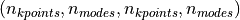
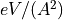
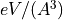
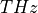

We recommend creating a new environment with Python 3.7.
conda create -n kaldo python=3.7
Alternatively you can use Python 3.6. The Tensorflow module doesn’t seem to be compatible with Python 3.8, yet.
kaldo installation can be done using pip
pip install kaldo
Code Architecture¶

Interfacing with Other Codes¶
Work in progress.
LAMMPS setup¶
Compile LAMMPS as a lib
cd path/to/lammps/src
make yes-manybody
make yes-molecule
make mpi mode=shlib
make install-python
Quantum Espresso setup¶
Set the environment variable:
export ASE_ESPRESSO_COMMAND="mpirun -np 4 /path/to/pw.x -in PREFIX.pwi > PREFIX.pwo"
Default¶
When using the storage formatted, kaldo stores the following dense tensor as formatted, human readable, files: - frequency  . mode changes first k changes after -
. mode changes first k changes after - velocity_alpha - physical_mode_<min_freq>_<max_freq>_<is_nw>
<temperature>/<statistics>/heat_capacity<temperature>/<statistics>/population<temperature>/<statistics>/<method>/<third_bandwidth>/<diffusivity_bandwidth>/conductivity_<alpha>_<beta> where the <third_bandwidth>/<diffusivity_bandwidth>folder is created only if those values are defined<temperature>/<statistics>/<diffusivity_bandwidth>/diffusivity<temperature>/<statistics>/<third_bandwidth>/<method>/mean_free_path<temperature>/<statistics>/<third_bandwidth>/lifetime<temperature>/<statistics>/<third_bandwidth>/bandwidth<temperature>/<statistics>/<third_bandwidth>/phase_space<diffusivity_bandwidth>flux_dense, whendiffusivity_thresholdis not specified.<diffusivity_bandwidth>/<diffusivity_threshold>/flux_sparse. Sparse only whendiffusivity_thresholdis specified.
The folder structure depends on the input parameters to the Phonon Object and in parenthesis is the shape of the tensor. All of the above observables are stored in a dense format, except for flux_alpha which is stored as formatted file in a index value format.
The following tensors are stored in raw binary format and help saving time when performing different simulations on the same sample. - _eigensystem (eigenvalues and eigenvectors) - _dynmat_derivatives - <temperature>/<statistics>/<diffusivity_bandwidth>/_generalized_diffusivity - <temperature>/<statistics>/<third_bandwidth>/_ps_and_gamma_tensor - <temperature>/<statistics>/<third_bandwidth>/_ps_and_gamma, when only RTA conductivity is required
Alternative Storage¶
Other storage options available are numpy and hdf5 where all the files are saved as one of those formats. Finally the memory option doesn’t store any permanent files.
Measurement |
Units |
|---|---|
Potential Derivatives |
 or  |
Dynamical Matrix |
 |
Conductivity [] |
|
Distances |
|
Masses |
|